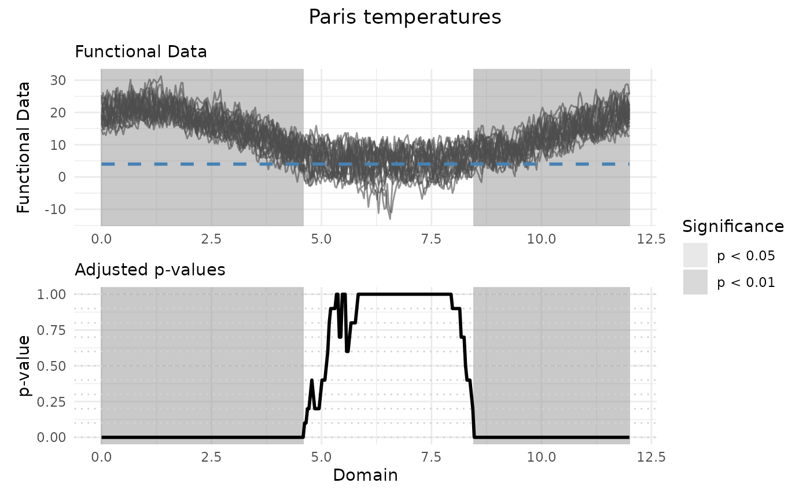

The S3 methods autoplot.fos() and plot.fos() are methods for plotting
results of functional one-sample tests. They visualize the functional data
and the adjusted p-values obtained from the testing procedures for testing
the center of symmetry of a functional population. The plots highlight
significant effects at two levels of significance, alpha1 and alpha2,
using shaded areas.
Usage
# S3 method for class 'fos'
autoplot(
object,
xrange = c(0, 1),
alpha1 = 0.05,
alpha2 = 0.01,
ylabel = "Functional Data",
title = NULL,
linewidth = 0.5,
...
)
# S3 method for class 'fos'
plot(
x,
xrange = c(0, 1),
alpha1 = 0.05,
alpha2 = 0.01,
ylabel = "Functional Data",
title = NULL,
linewidth = 0.5,
...
)
# S3 method for class 'IWT1'
plot(
x,
xrange = c(0, 1),
alpha1 = 0.05,
alpha2 = 0.01,
ylab = "Functional Data",
main = NULL,
lwd = 1,
col = 1,
ylim = NULL,
type = "l",
...
)Arguments
- object, x
An object of class
fos, usually a result of a call tofunctional_one_sample_test()oriwt1().- xrange
A length-2 numeric vector specifying the range of the x-axis for the plots. Defaults to
c(0, 1). This should match the domain of the functional data.- alpha1
A numeric value specifying the first level of significance used to select and display significant effects. Defaults to
alpha1 = 0.05.- alpha2
A numeric value specifying the second level of significance used to select and display significant effects. Defaults to
alpha2 = 0.01.- ylabel
A string specifying the label of the y-axis of the functional data plot. Defaults to
"Functional Data".- title
A string specifying the title of the plots. Defaults to
NULLin which case no title is displayed.- linewidth
A numeric value specifying the width of the line for the functional data plot. Note that the line width for the adjusted p-value plot will be twice this value. Defaults to
linewidth = 0.5.- ...
Other arguments passed to specific methods. Not used in this function.
- ylab
Label of the y-axis (legacy alias for
ylabel). Defaults to"Functional Data".- main
Plot title (legacy alias for
title). Defaults toNULL.- lwd
Line width (legacy alias for
linewidth; divided by 2 for ggplot2 scaling). Defaults to1.- col, ylim, type
Ignored; retained for backward compatibility only.
Value
The autoplot.fos() function creates a ggplot object that displays
the functional data (with the null mean function mu overlaid as a dashed
reference line) and the adjusted p-values. The significant intervals at
levels alpha1 and alpha2 are highlighted in both panels. The
plot.fos() function is a wrapper around autoplot.fos() that prints the
plot directly.
References
Pini, A., & Vantini, S. (2017). Interval-wise testing for functional data. Journal of Nonparametric Statistics, 29(2), 407-424.
Pini, A., Vantini, S., Colosimo, B. M., & Grasso, M. (2018). Domain‐selective functional analysis of variance for supervised statistical profile monitoring of signal data. Journal of the Royal Statistical Society: Series C (Applied Statistics) 67(1), 55-81.
Abramowicz, K., Hager, C. K., Pini, A., Schelin, L., Sjostedt de Luna, S., & Vantini, S. (2018). Nonparametric inference for functional‐on‐scalar linear models applied to knee kinematic hop data after injury of the anterior cruciate ligament. Scandinavian Journal of Statistics 45(4), 1036-1061.
See also
IWTimage() for the plot of p-value heatmaps (for IWT).
Examples
# Performing the IWT for one population
IWT_result <- functional_one_sample_test(
NASAtemp$paris, mu = 4, n_perm = 10L
)
# Plotting the results
plot(IWT_result, xrange = c(0, 12), title = "Paris temperatures")

# Selecting the significant components at 5% level
which(IWT_result$adjusted_pvalues < 0.05)
#> [1] 1 2 3 4 5 6 7 8 9 10 11 12 13 14 15 16 17 18
#> [19] 19 20 21 22 23 24 25 26 27 28 29 30 31 32 33 34 35 36
#> [37] 37 38 39 40 41 42 43 44 45 46 47 48 49 50 51 52 53 54
#> [55] 55 56 57 58 59 60 61 62 63 64 65 66 67 68 69 70 71 72
#> [73] 73 74 75 76 77 78 79 80 81 82 83 84 85 86 87 88 89 90
#> [91] 91 92 93 94 95 96 97 98 99 100 101 102 103 104 105 106 107 108
#> [109] 109 110 111 112 113 114 115 116 117 118 119 120 121 122 123 124 125 126
#> [127] 127 128 129 130 131 132 133 134 135 136 137 138 139 140 258 259 260 261
#> [145] 262 263 264 265 266 267 268 269 270 271 272 273 274 275 276 277 278 279
#> [163] 280 281 282 283 284 285 286 287 288 289 290 291 292 293 294 295 296 297
#> [181] 298 299 300 301 302 303 304 305 306 307 308 309 310 311 312 313 314 315
#> [199] 316 317 318 319 320 321 322 323 324 325 326 327 328 329 330 331 332 333
#> [217] 334 335 336 337 338 339 340 341 342 343 344 345 346 347 348 349 350 351
#> [235] 352 353 354 355 356 357 358 359 360 361 362 363 364 365